Steward
分享是一種喜悅、更是一種幸福
掌機 - Game & Watch: Super Mario Bros. - 焊接SWD腳位
參考資訊：
https://twitter.com/ghidraninja/status/1326856771516964864
依照stacksmashing(NSA Ghidra ?)提供的資訊
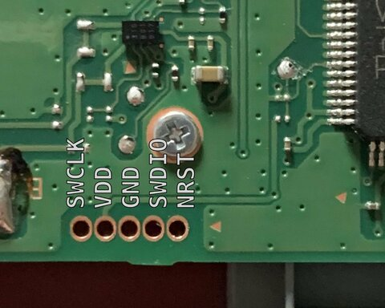
接著司徒找一個風水寶地塞下這個5 Pin排針
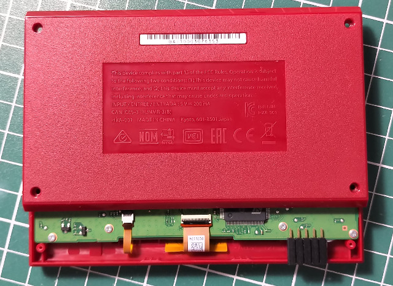
排針寬度
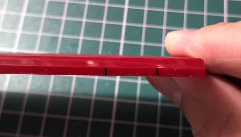
剛好卡住PCB
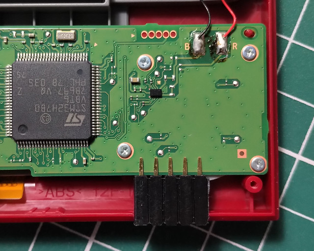
跳線
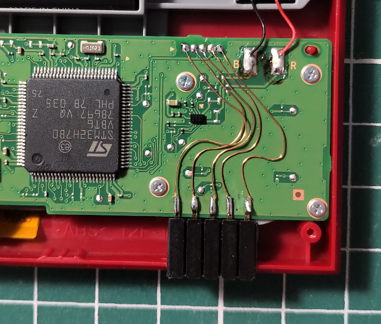
使用三秒膠固定排針
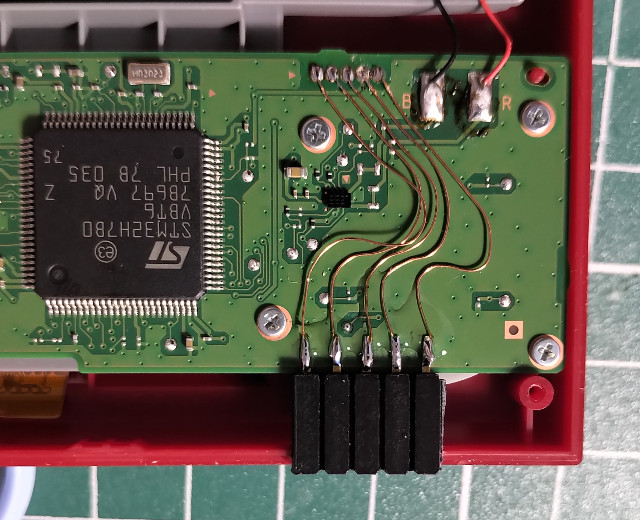
為了美感，重新焊接...
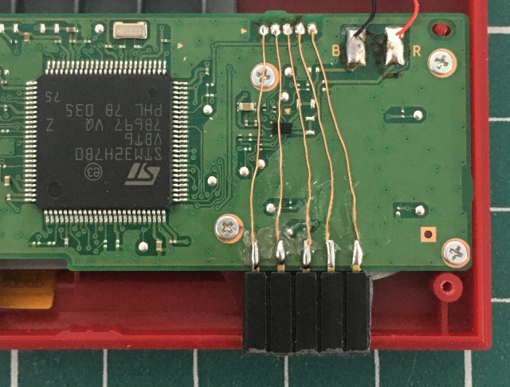
B面需要裁切一下
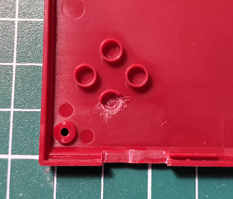
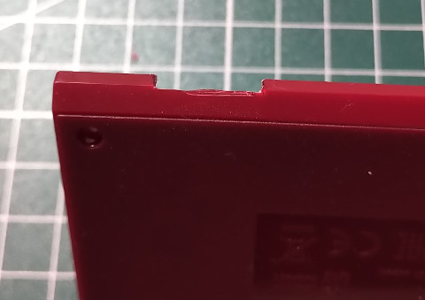
沒有凸出太多
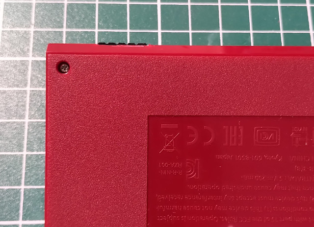
裁切大小剛好
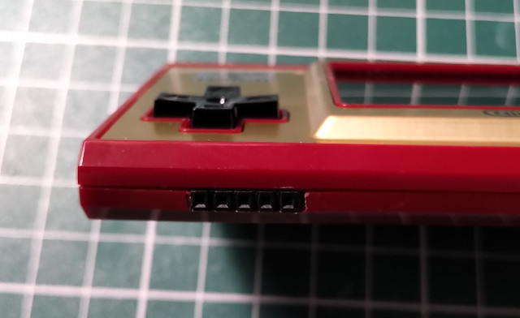
看了幾下，感覺還可以...
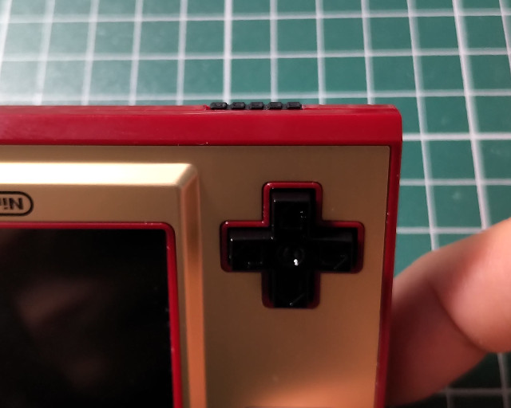
滿意
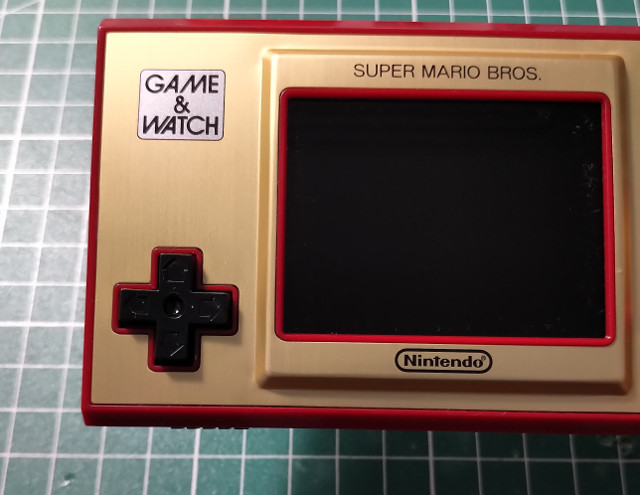
從左到右：SWCLK、VDD(3.3V)、GND、SWDIO、NRST
連接ST-LINK V2
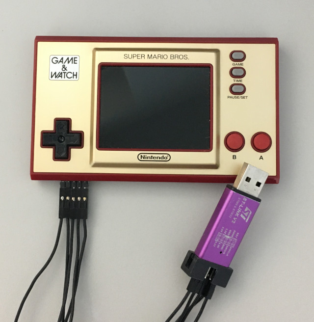
P.S. VDD接到3.3V
編譯openocd
$ cd $ git clone git://repo.or.cz/openocd.git $ cd openocd $ ./bootstrap $ ./configure --prefix=/usr $ make $ sudo make install
連接
$ sudo openocd -f /usr/local/share/openocd/scripts/interface/stlink.cfg -f /usr/local/share/openocd/scripts/target/stm32h7x.cfg
Open On-Chip Debugger 0.10.0+dev-01524-g861e75f54-dirty (2020-12-09-09:55)
Licensed under GNU GPL v2
For bug reports, read
http://openocd.org/doc/doxygen/bugs.html
Info : auto-selecting first available session transport "hla_gw_swd". To override use 'transport select <transport>'.
Info : The selected transport took over low-level target control. The results might differ compared to plain JTAG/SWD
Info : Listening on port 6666 for tcl connections
Info : Listening on port 4444 for telnet connections
Info : clock speed 1800 kHz
Info : STLINK V2J17S4 (API v2) VID:PID 0483:3748
Info : Target voltage: 3.191639
Info : stm32h7x.cpu0: hardware has 8 breakpoints, 4 watchpoints
Info : starting gdb server for stm32h7x.cpu0 on 3333
Info : Listening on port 3333 for gdb connections
P.S. 如果無法連接，先把NRST接到GND再接回NRST
接著開啟另一個Terminal
$ telnet localhost 4444
Trying ::1...
Trying 127.0.0.1...
Connected to localhost.
Escape character is '^]'.
Open On-Chip Debugger
> targets
TargetName Type Endian TapName State
-- ------------------ ---------- ------ ------------------ ------------
0* stm32h7x.cpu0 hla_target little stm32h7x.cpu halted
最後，為了不想要每次都接那一堆線，司徒決定焊接一塊小轉板
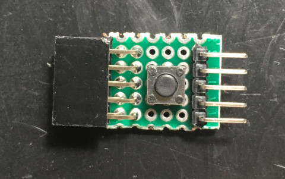
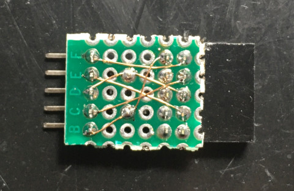
完成
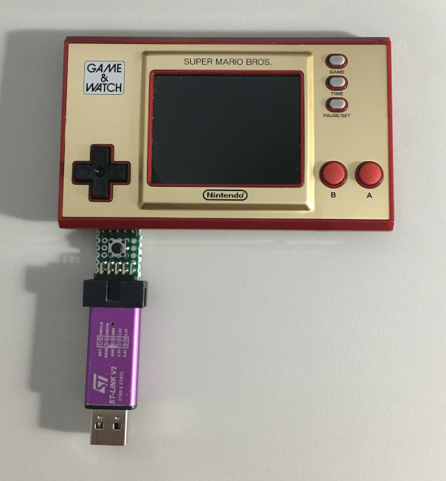